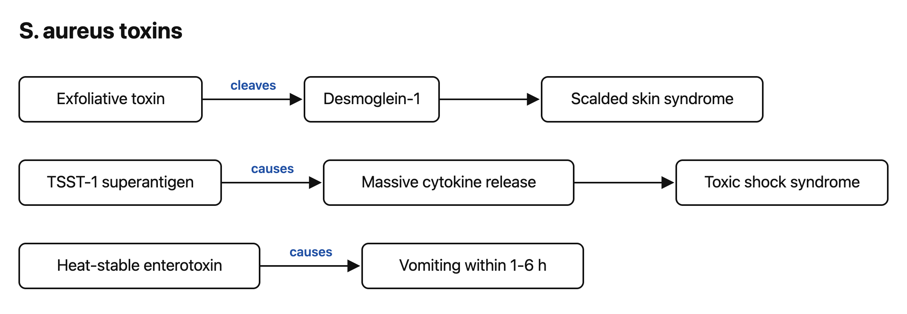

Flashcards
Study guide: Staphylococcus aureus (sample)
Built by the agent from
sample/curriculum(a synthetic lecture) with/study-guide. Every bullet cites a slide[[deck#S#]]or a verified PubMed record[PMID:…]. Checked withscripts/check.py.
Learning objectives
- Identify S. aureus in the lab. 2. Link virulence factors to disease. 3. Explain methicillin resistance. MICRO/Staphylococcus aureus (sample lecture) · S1
One-page summary
- Gram-positive cocci in clusters; catalase + (vs strep) and coagulase + (vs most other staph). MICRO/Staphylococcus aureus (sample lecture) · S2
- It evades opsonization: protein A binds the IgG Fc region, and the capsule resists phagocytosis. MICRO/Staphylococcus aureus (sample lecture) · S3
- Disease comes either from invasion (abscess, endocarditis, osteomyelitis) or from toxins (TSS, scalded skin, food poisoning). MICRO/Staphylococcus aureus (sample lecture) · S4 MICRO/Staphylococcus aureus (sample lecture) · S5
- MRSA = mecA → PBP2a (low β-lactam affinity), carried on SCCmec. MICRO/Staphylococcus aureus (sample lecture) · S6 PMID 30209034
Virulence factor → disease
| Factor | Mechanism | Disease | Source |
|---|---|---|---|
| Protein A | Binds IgG Fc and blocks opsonization | Persistence, abscess | MICRO/Staphylococcus aureus (sample lecture) · S3 |
| TSST-1 | Superantigen that cross-links MHC II and the TCR outside the peptide groove → cytokine storm | Toxic shock syndrome | MICRO/Staphylococcus aureus (sample lecture) · S4 PMID 38247655 |
| Exfoliative toxins | Cleave desmoglein-1 | Scalded skin syndrome | MICRO/Staphylococcus aureus (sample lecture) · S4 |
| Enterotoxins | Preformed and heat-stable | Vomiting 1–6 h after eating | MICRO/Staphylococcus aureus (sample lecture) · S4 |
| PVL | Kills leukocytes | Necrotizing skin infection and pneumonia | MICRO/Staphylococcus aureus (sample lecture) · S4 |
Integration thread (micro → immuno → path → pharm)
Protein A blocks antibody-mediated opsonization (immuno) MICRO/Staphylococcus aureus (sample lecture) · S3 → neutrophils pile up and wall off the infection as an abscess (path) MICRO/Staphylococcus aureus (sample lecture) · S5 → treatment must work against PBP2a when MRSA is suspected (pharm). MICRO/Staphylococcus aureus (sample lecture) · S6
Beyond the slides
- Overview review: Tong et al. cover epidemiology, pathophysiology, and management of S. aureus infections across the whole clinical spectrum. A good second read after the lecture. PMID 26016486
- StatPearls chapters (free, peer-reviewed): Staphylococcus aureus Infection PMID 28722898 and Methicillin-Resistant Staphylococcus aureus PMID 29489200.
- Why PBP2a escapes β-lactams: an updated review of the molecular determinants of β-lactam resistance in MRSA. PMID 37760659
🔬 How do we know? The slide says daptomycin is not used for pneumonia MICRO/Staphylococcus aureus (sample lecture) · S6. The evidence: pulmonary surfactant inhibits daptomycin in vitro, matching its failure in pneumonia trials. PMID 15898002
Discrepancies
None found between the sample slides and the sources above. (With real course decks, the agent lists any ⚠️ differences here for you to ask faculty about.)
Self-test (answers below)
- Why does catalase separate staph from strep?
- Why would protein A make S. aureus harder to clear?
- How does a superantigen activate so many T cells?
- Why is MRSA resistant to almost all β-lactams?
- Why is daptomycin avoided for pneumonia?
Answers
1. Staphylococci are catalase-positive and streptococci are not. MICRO/Staphylococcus aureus (sample lecture) · S2 2. It binds the Fc region of IgG, blocking opsonization and phagocytosis. MICRO/Staphylococcus aureus (sample lecture) · S3 3. It binds MHC II and the TCR outside the peptide groove, activating T cells regardless of antigen. MICRO/Staphylococcus aureus (sample lecture) · S4 4. *mecA* encodes PBP2a, which has low affinity for β-lactams. MICRO/Staphylococcus aureus (sample lecture) · S6 5. Pulmonary surfactant inactivates it. MICRO/Staphylococcus aureus (sample lecture) · S6 PMID 15898002Click the card or press space to flip. Arrow keys move between cards.
S. aureus toxins

- Exfoliative toxin MICRO/Staphylococcus aureus (sample lecture) · S4
- Desmoglein-1 MICRO/Staphylococcus aureus (sample lecture) · S4
- Scalded skin syndrome MICRO/Staphylococcus aureus (sample lecture) · S4
- TSST-1 superantigen MICRO/Staphylococcus aureus (sample lecture) · S4
- Massive cytokine release MICRO/Staphylococcus aureus (sample lecture) · S4
- Toxic shock syndrome MICRO/Staphylococcus aureus (sample lecture) · S4
- Heat-stable enterotoxin MICRO/Staphylococcus aureus (sample lecture) · S4
- Vomiting within 1-6 h MICRO/Staphylococcus aureus (sample lecture) · S4
- cleaves MICRO/Staphylococcus aureus (sample lecture) · S4
- causes MICRO/Staphylococcus aureus (sample lecture) · S4
- causes MICRO/Staphylococcus aureus (sample lecture) · S4